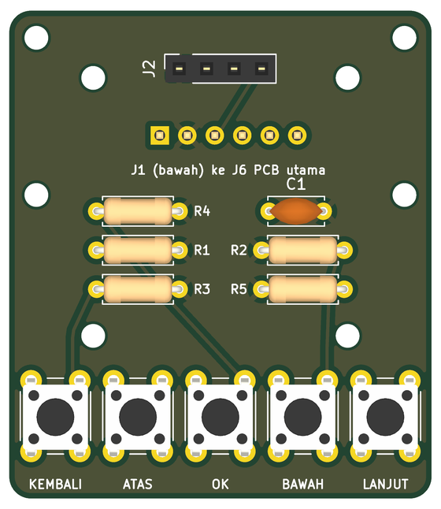

<title>Konsep LFM v18</title>
<meta name="claude:viewport-fit-sides" content="cover">
<link rel="stylesheet" href="https://fonts.googleapis.com/css2?family=IBM+Plex+Sans:wght@400;500;600&family=IBM+Plex+Mono:wght@400;500&display=swap">
<style>
/* lembar konsep (sama dengan konsep v17): kertas hijau-abu, tinta gelap; panggung 3D di atas, angka di bawahnya */
:root {
  --bg: #f3f5f2; --paper: #fbfcfa; --ink: #1c2420; --muted: #5d6b63; --line: #c9d2cc;
  --accent: #b4521f; --good: #2f7a4f; --pick: #d3202e; --on-pick: #ffffff; --stage: #e6eaee; --floor: #f4f4f1;
  --display: "IBM Plex Sans", system-ui, sans-serif; --mono: "IBM Plex Mono", ui-monospace, monospace;
}
@media (prefers-color-scheme: dark) { :root:not([data-theme="light"]) {
  --bg: #121614; --paper: #181d1a; --ink: #e4ebe6; --muted: #98a69e; --line: #2e3833;
  --accent: #e08a5a; --good: #59a87a; --pick: #e2414d; --on-pick: #ffffff; --stage: #232a2f; --floor: #3a4046;
  color-scheme: dark; } }
:root[data-theme="dark"] {
  --bg: #121614; --paper: #181d1a; --ink: #e4ebe6; --muted: #98a69e; --line: #2e3833;
  --accent: #e08a5a; --good: #59a87a; --pick: #e2414d; --on-pick: #ffffff; --stage: #232a2f; --floor: #3a4046;
  color-scheme: dark; }
body { background: var(--bg); color: var(--ink); font-family: var(--display); font-size: 15px; line-height: 1.55;
  padding-left: max(16px, env(safe-area-inset-left, 0px)); padding-right: max(16px, env(safe-area-inset-right, 0px));
  padding-block: 28px 48px; }
main { max-width: 1080px; margin: 0 auto; display: grid; grid-template-columns: minmax(0, 1fr); gap: 28px; }
h1 { font-size: 1.7rem; font-weight: 600; margin: 0; text-wrap: balance; letter-spacing: -0.01em; }
h2 { font-size: 0.78rem; font-weight: 500; text-transform: uppercase; letter-spacing: 0.09em; color: var(--muted); margin: 0 0 10px; }
p { margin: 0; max-width: 68ch; }
.lead { color: var(--muted); }
.viewer { display: grid; gap: 10px; min-width: 0; }
#stage { position: relative; background: var(--stage); border: 1px solid var(--line); border-radius: 6px; overflow: hidden;
  aspect-ratio: 16 / 9; max-height: 640px; width: 100%; }
@media (max-width: 720px) { #stage { aspect-ratio: 4 / 5; } }
#stage canvas { display: block; width: 100%; height: 100%; outline: none; touch-action: none; }
.bar { position: absolute; top: 10px; left: 10px; right: 10px; display: flex; flex-wrap: wrap; gap: 8px;
  justify-content: space-between; pointer-events: none; }
.views, .urai { display: flex; gap: 2px; background: var(--paper); border: 1px solid var(--line); border-radius: 6px;
  padding: 3px; pointer-events: auto; }
.bar button { font: 500 0.8rem var(--display); color: var(--ink); background: transparent; border: 0; border-radius: 4px;
  padding: 6px 9px; cursor: pointer; }
.bar button[aria-pressed="true"] { background: var(--ink); color: var(--paper); }
.urai button[aria-pressed="true"] { background: var(--pick); color: var(--on-pick); }
.bar button:focus-visible { outline: 2px solid var(--accent); outline-offset: 2px; }
.hint { position: absolute; left: 10px; bottom: 10px; font-size: 0.75rem; color: var(--muted); background: var(--paper);
  border-radius: 4px; padding: 3px 8px; pointer-events: none; }
#labels { position: absolute; inset: 0; pointer-events: none; overflow: hidden; }
.lbl { position: absolute; transform: translate(14px, -50%); font-size: 0.74rem; line-height: 1.3; white-space: nowrap;
  color: var(--ink); background: var(--paper); border: 1px solid var(--line); border-radius: 4px; padding: 2px 7px;
  opacity: 0; transition: opacity 0.2s; }
.lbl::before { content: ""; position: absolute; left: -15px; top: 50%; width: 15px; border-top: 1px solid var(--accent); }
.lbl::after { content: ""; position: absolute; left: -18px; top: calc(50% - 3px); width: 6px; height: 6px; border-radius: 50%;
  background: var(--accent); }
.lbl.l { transform: translate(calc(-100% - 14px), -50%); }
.lbl.l::before { left: auto; right: -15px; }
.lbl.l::after { left: auto; right: -18px; }
@media (max-width: 720px) { .lbl { font-size: 0.66rem; white-space: normal; width: max-content; max-width: 118px; } }
#loading { position: absolute; inset: 0; display: grid; place-items: center; font-family: var(--mono); font-size: 0.82rem;
  color: var(--muted); pointer-events: none; text-align: center; padding: 16px; }
.info { display: grid; grid-template-columns: minmax(0, 5fr) minmax(0, 7fr); gap: 20px; align-items: start;
  background: var(--paper); border: 1px solid var(--line); border-radius: 6px; padding: 16px; }
@media (max-width: 720px) { .info { grid-template-columns: 1fr; } }
.info h3 { margin: 0 0 4px; font-size: 1.05rem; font-weight: 600; }
.info p { font-size: 0.92rem; }
.kv { display: grid; grid-template-columns: repeat(3, minmax(0, 1fr)); gap: 12px 16px; margin: 0; }
@media (max-width: 480px) { .kv { grid-template-columns: 1fr 1fr; } }
.kv div { min-width: 0; }
.kv dt { font-size: 0.72rem; text-transform: uppercase; letter-spacing: 0.06em; color: var(--muted); }
.kv dd { margin: 0; font-family: var(--mono); font-size: 0.95rem; font-variant-numeric: tabular-nums; }
table { border-collapse: collapse; width: 100%; font-size: 0.92rem; min-width: 640px; }
.tablewrap { overflow-x: auto; }
th, td { text-align: left; padding: 8px 10px; border-bottom: 1px solid var(--line); vertical-align: top; }
th { font-weight: 500; color: var(--muted); font-size: 0.8rem; text-transform: uppercase; letter-spacing: 0.06em; }
td:first-child { font-weight: 500; white-space: nowrap; }
td:nth-child(2) { color: var(--muted); white-space: nowrap; }
ol, ul { margin: 0; padding-left: 1.2em; display: grid; gap: 6px; max-width: 72ch; }
.cols { display: grid; grid-template-columns: 1fr 1fr; gap: 28px; }
@media (max-width: 720px) { .cols { grid-template-columns: 1fr; } }
.cols > section { min-width: 0; }
.board { display: grid; grid-template-columns: minmax(0, 300px) minmax(0, 1fr); gap: 24px; align-items: start; }
@media (max-width: 720px) { .board { grid-template-columns: 1fr; } }
.board figure { margin: 0; background: #ffffff; border: 1px solid var(--line); border-radius: 6px; padding: 8px; }
.board img { display: block; width: 100%; height: auto; }
.board figcaption { font-size: 0.78rem; color: #5d6b63; padding-top: 6px; }
.note { font-size: 0.85rem; color: var(--muted); }
</style>
<script type="importmap">{ "imports": { "three": "https://cdn.jsdelivr.net/npm/three@0.160.0/build/three.module.js", "three/addons/": "https://cdn.jsdelivr.net/npm/three@0.160.0/examples/jsm/" } }</script>
<main>
  <header style="display:grid;gap:10px">
    <h1>Konsep LFM v18: susunan A, semua PCB terkunci, tombol sebaris</h1>
    <p class="lead">Susunan A · Ransel yang kamu pilih: pack Li-ion 2S rebah di belakang motor dan diikat strap. Sekarang
    tiap PCB punya pengikatnya sendiri, dan board interface digambar ulang (rev B) supaya simetris: OLED di tengah, lima
    tombol sebaris di belakangnya. PCB utama dan PCB sensor tidak diubah. Tekan <b>Urai</b> untuk melihat cara pasangnya.</p>
  </header>

  <section class="viewer">
    <div id="stage" aria-label="Model 3D robot, bisa diputar dengan mouse atau jari">
      <div id="loading">memuat model 3D…</div>
      <div id="labels" aria-hidden="true"></div>
      <div class="bar">
        <div class="urai"><button type="button" id="urai" aria-pressed="false">Urai</button></div>
        <div class="views" role="group" aria-label="Sudut pandang">
          <button type="button" data-view="rear" aria-pressed="true">Belakang</button>
          <button type="button" data-view="front" aria-pressed="false">Depan</button>
          <button type="button" data-view="side" aria-pressed="false">Samping</button>
          <button type="button" data-view="top" aria-pressed="false">Atas</button>
        </div>
      </div>
      <div class="hint">seret untuk memutar · scroll atau cubit untuk zoom · garis hitam = lintasan 20 mm</div>
    </div>
    <div class="info">
      <div><h3>v18 · pack di belakang motor</h3><p>Pack rebah melintang tepat di belakang motor, puncaknya 27 mm (dulu 44 mm di atas motor). Perkiraan massa turun dari ±294 g ke ±230 g, panjang 163 → 174 mm, lebar tetap 115 mm. Titik tertinggi adalah kaca OLED, 51 mm dari lantai.</p></div>
      <dl class="kv"><div><dt>Ukuran p × l × t</dt><dd>174 × 115 × 51 mm</dd></div><div><dt>Perkiraan massa</dt><dd>±230 g</dd></div><div><dt>Puncak baterai</dt><dd>27 mm</dd></div><div><dt>Berat di roda penggerak</dt><dd>66%</dd></div><div><dt>Board interface</dt><dd>39 × 45 mm</dd></div><div><dt>Celah lantai terendah</dt><dd>8,6 mm</dd></div></dl>
    </div>
  </section>

  <section>
    <h2>Board interface rev B: simetris</h2>
    <div class="board">
      <figure>
        <figcaption>Render KiCad tanpa modul OLED. Bawah gambar = belakang robot.</figcaption></figure>
      <ul><li><b>39 × 45 mm, simetris terhadap garis tengah robot.</b> Rev A 46 × 36 mm dengan dua tombol di kiri dan tiga di kanan OLED.</li><li><b>Lima tombol sebaris di belakang OLED</b>, jarak 7,62 mm: KEMBALI, ATAS, OK, BAWAH, LANJUT. OK tepat di tengah. Dilihat dari belakang robot, tombol ada di bawah layar.</li><li><b>Skematik tidak berubah</b> (tangga resistor ke GPIO34 yang sama), jadi firmware dan PCB utama tidak ikut berubah. Header J1 tetap tepat di atas J6 PCB utama.</li><li><b>8 lubang M2:</b> 4 ke rangka interface, 4 untuk spacer modul OLED.</li><li><b>Hasil KiCad:</b> DRC 0 error, 0 warning, 0 unconnected, cocok dengan skematik. Dua layer tanpa via, GND pour dua sisi. Tembaga tidak masuk zona antena ESP32.</li></ul>
    </div>
  </section>

  <section>
    <h2>Cara tiap PCB dipasang</h2>
    <div class="tablewrap"><table><thead><tr><th>Bagian</th><th>Dipasang ke</th><th>Pengikat</th></tr></thead>
      <tbody><tr><td>PCB sensor rev B</td><td>hidung skid plate</td><td>2 baut M3 × 10 dari bawah di lubang H1/H2, spacer nilon ±3,5 mm, mur di atas skid plate</td></tr><tr><td>PCB utama rev B</td><td>skid plate</td><td>4 baut M3 × 30 kepala benam dari bawah skid plate, lewat boss 3 mm yang menyatu dengan skid plate</td></tr><tr><td>Rangka interface (3D print, baru)</td><td>di atas PCB utama</td><td>4 kakinya masuk ke 4 baut M3 yang sama, dikunci 4 mur di atas kaki. Sekaligus menjepit PCB utama</td></tr><tr><td>Board interface rev B</td><td>rangka interface</td><td>4 baut M2 × 6 ke boss rangka; tepi belakang (di bawah baris tombol) bertumpu di balok rangka; header 1×6 ke J6</td></tr><tr><td>Modul OLED 0,96 inci</td><td>board interface</td><td>socket 4 pin + 4 spacer M2 ±11 mm; baut M2 di 2 lubang atas (2 lubang bawah cukup jadi ganjal, kepala baut di situ mepet kaca)</td></tr><tr><td>ESP32 DevKit</td><td>PCB utama</td><td>socket 2 × 15 pin (tidak berubah)</td></tr><tr><td>Pack Li-ion 2S</td><td>ekor skid plate</td><td>strap velcro 16 mm lewat celah skid plate + bibir 4 mm di empat sudut</td></tr></tbody></table></div>
  </section>

  <div class="cols">
    <section>
      <h2>Perlu diukur atau diputuskan</h2>
      <ol><li><b>Ukur modul OLED sebelum board interface dicetak.</b> Empat lubang spacer memakai ukuran umum modul 0,96 inci (jarak lubang 23,5 × 23,8 mm, deret pin 0,85 mm di atas lubang atas). Modul tiap penjual bisa beda sampai 1 mm.</li><li><b>Tinggi ESP32 saya koreksi.</b> Model lama lupa plastik header pin (2,54 mm) di antara socket dan ESP32, jadi puncak ESP32 sebenarnya 32,3 mm, bukan 29,8 mm. Karena itu board interface naik dari 33 ke 36,1 mm supaya kaki solder tombol tidak menyentuh kaleng modul ESP32. Tolong ukur tinggi ESP32 di socket begitu barangnya ada.</li><li><b>Header J6 → board interface:</b> jaraknya 19,5 mm. Di model saya pakai socket 8,5 mm + header susun (stackable) 1×6 + header pin biasa. Pilihan lain: satu header pin panjang ±19 mm.</li><li><b>Cas:</b> di model, pack dicas di luar robot lewat kabel balancer. Kalau tetap mau cas USB-C di robot, modul charger dan BMS perlu tempat lagi.</li><li><b>Harga pack dan charger balance</b>, supaya RAB bisa dihitung ulang (yang keluar Rp137.990).</li><li><b>Label 5.000 mAh</b> terhadap batas 4.000 mAh di guidebook: perlu jawaban panitia sebelum pack dibeli.</li></ol>
    </section>
    <section>
      <h2>Soal pack-nya (belum berubah)</h2>
      <ul><li><b>Kapasitas 5.000 mAh di listing tidak mungkin benar.</b> Dua sel 14500 seberat 46 g realistisnya 600–1.000 mAh, kira-kira 1–1,5 jam jalan. Cukup untuk match 5 menit, tetapi jangan menulis 5.000 mAh di laporan.</li><li><b>Pilih varian konektor XH 2 pin</b> supaya langsung masuk J1. Sebelum colok pertama, ukur polaritasnya dengan multimeter: pin 1 J1 = BAT+, pin 2 = GND, dan tidak ada proteksi polaritas terbalik.</li><li><b>Proteksi:</b> tanyakan ke penjual apakah pack punya papan proteksi. Kalau tidak, batas bawah tegangan dijaga firmware lewat VBAT_SENSE (GPIO39).</li><li><b>Panjang kabel pack:</b> butuh ±8 cm sampai J1.</li></ul>
    </section>
  </div>

  <section>
    <h2>Hasil cek otomatis</h2>
    <ul><li>0 masalah</li></ul>
    <p class="note" style="margin-top:10px">Yang dicek dengan kotak pembatas tiap bagian: rangka interface terhadap semua komponen
    PCB utama, kabel, jalur steker USB ESP32, dan akses tuas SW1; kaki solder di bawah board interface terhadap kaleng modul ESP32
    dan rangka; OLED terhadap tombol; pack di dalam skid plate; batas ukuran dan massa lomba. Massa dihitung dari perkiraan
    tiap bagian (<code>docs/perhitungan-motor.md</code> bagian 4), belum ditimbang.</p>
  </section>
</main>

<script type="module">
const META = {"kv": [["Ukuran p × l × t", "174 × 115 × 51 mm"], ["Perkiraan massa", "±230 g"], ["Puncak baterai", "27 mm"], ["Berat di roda penggerak", "66%"], ["Board interface", "39 × 45 mm"], ["Celah lantai terendah", "8,6 mm"]], "expl": {"pack": [0, -34, 0], "sensor": [0, 36, 0], "main": [0, 0, 16], "frame": [0, 0, 42], "mur": [0, 0, 52], "iface": [0, 0, 66], "oled": [0, 0, 86]}, "labels": [{"g": "oled", "p": [13.65, 61.0, 49.980000000000004], "t": "OLED: socket 4 pin + 4 spacer M2"}, {"g": "iface", "p": [19.5, 52.0, 37.74], "t": "Board interface rev B: 4 baut M2 ke rangka"}, {"g": "mur", "p": [-38.5, 29.0, 37.34], "t": "4 mur M3"}, {"g": "frame", "p": [32.5, 56.0, 34.94], "t": "Rangka interface (3D print)"}, {"g": "main", "p": [-42.0, 27.0, 16.6], "t": "PCB utama rev B"}, {"g": "base", "p": [32.5, 56.0, 21.0], "t": "4 baut M3 × 30 dari bawah skid plate"}, {"g": "sensor", "p": [40.0, 112.0, 6.4], "t": "PCB sensor: 2 baut M3 + spacer"}, {"g": "pack", "p": [-25.0, -26.0, 24.0], "t": "Pack 2S + strap velcro"}], "pack": [-25.0, 25.0, -41.5, -11.5, 12.0, 27.0], "ibt": 37.74, "ib": [-19.5, 19.5, 34.0, 79.0], "btn": [[-15.24, "KEMBALI"], [-7.62, "ATAS"], [0.0, "OK"], [7.62, "BAWAH"], [15.24, "LANJUT"]]};
const $ = (s) => document.querySelector(s);
const q = new URLSearchParams(location.search);

try {
  const THREE = await import('three');
  const { OrbitControls } = await import('three/addons/controls/OrbitControls.js');
  const { RoomEnvironment } = await import('three/addons/environments/RoomEnvironment.js');
  const stage = $('#stage');
  const renderer = new THREE.WebGLRenderer({ antialias: true, preserveDrawingBuffer: true });
  renderer.setPixelRatio(Math.min(window.devicePixelRatio, 2));
  renderer.outputColorSpace = THREE.SRGBColorSpace;
  renderer.toneMapping = THREE.ACESFilmicToneMapping;
  renderer.shadowMap.enabled = true;
  renderer.shadowMap.type = THREE.PCFSoftShadowMap;
  stage.prepend(renderer.domElement);

  const scene = new THREE.Scene();
  scene.environment = new THREE.PMREMGenerator(renderer).fromScene(new RoomEnvironment(), 0.04).texture;
  const camera = new THREE.PerspectiveCamera(30, 1, 1, 5000);
  camera.up.set(0, 0, 1);
  const controls = new OrbitControls(camera, renderer.domElement);
  controls.enableDamping = true;
  controls.minDistance = 120; controls.maxDistance = 1300;

  const floorMat = new THREE.MeshStandardMaterial({ roughness: 0.95 });
  const floor = new THREE.Mesh(new THREE.PlaneGeometry(3000, 3000), floorMat);
  floor.receiveShadow = true; scene.add(floor);
  const tape = new THREE.Mesh(new THREE.PlaneGeometry(20, 1400), new THREE.MeshStandardMaterial({ color: '#141414', roughness: 0.8 }));
  tape.position.set(0, 100, 0.05); tape.receiveShadow = true; scene.add(tape);
  function theme() {
    const cs = getComputedStyle(document.documentElement);
    scene.background = new THREE.Color(cs.getPropertyValue('--stage').trim());
    floorMat.color.set(cs.getPropertyValue('--floor').trim());
  }
  theme();
  matchMedia('(prefers-color-scheme: dark)').addEventListener('change', theme);
  new MutationObserver(theme).observe(document.documentElement, { attributes: true, attributeFilter: ['data-theme'] });

  const key = new THREE.DirectionalLight('#ffffff', 2.2);
  key.position.set(160, -200, 420);
  key.castShadow = true;
  key.shadow.mapSize.set(2048, 2048);
  Object.assign(key.shadow.camera, { left: -170, right: 170, top: 210, bottom: -150, near: 50, far: 1200 });
  key.shadow.bias = -0.0004; key.shadow.radius = 4;
  key.target.position.set(0, 40, 0); scene.add(key.target, key);
  scene.add(new THREE.HemisphereLight('#ffffff', '#c9ced6', 0.6));

  const data = await (await fetch('konsep-v18-model.json')).json();
  const mats = {}, matsD = {};
  for (const [k, [c, r, m]] of Object.entries(data.mats)) {
    mats[k] = new THREE.MeshStandardMaterial({ color: c, roughness: r, metalness: m });
    matsD[k] = mats[k].clone(); matsD[k].side = THREE.DoubleSide;
  }
  mats.screen.emissive = new THREE.Color('#7fc4ff'); mats.screen.emissiveIntensity = 1.4;
  mats.glass.envMapIntensity = 1.6;
  const groups = {};
  const group = (n) => groups[n] || (groups[n] = scene.add(new THREE.Group()).children.at(-1));
  for (const o of data.meshes) {
    const g = new THREE.BufferGeometry();
    g.setAttribute('position', new THREE.Float32BufferAttribute(o.p, 3));
    g.setIndex(o.i);
    g.computeVertexNormals();
    const mesh = new THREE.Mesh(g, (o.d ? matsD : mats)[o.m]);
    mesh.name = o.n; mesh.castShadow = !['screen', 'silk', 'gold'].includes(o.m); mesh.receiveShadow = true;
    group(o.g).add(mesh);
  }
  // teks: label pack (di kanan strap) dan nama tombol di tepi belakang board interface (seperti silkscreen)
  function textPlane(w, h, px, draw) {
    const cv = document.createElement('canvas'); cv.width = Math.round(w * px); cv.height = Math.round(h * px);
    const cx = cv.getContext('2d'); cx.fillStyle = '#f2f2ee'; cx.textAlign = 'center'; cx.textBaseline = 'middle';
    draw(cx, px);
    const tex = new THREE.CanvasTexture(cv); tex.colorSpace = THREE.SRGBColorSpace; tex.anisotropy = 8;
    return new THREE.Mesh(new THREE.PlaneGeometry(w, h), new THREE.MeshBasicMaterial({ map: tex, transparent: true }));
  }
  const p = META.pack;
  const packLabel = textPlane(13.5, 9, 28, (cx, px) => {
    cx.font = `600 ${2.7 * px}px "IBM Plex Sans", sans-serif`; cx.fillText('Li-ion 2S', 6.75 * px, 3.1 * px);
    cx.font = `500 ${2.3 * px}px "IBM Plex Sans", sans-serif`; cx.fillText('7,4 V', 6.75 * px, 6.5 * px);
  });
  packLabel.position.set(16.2, (p[2] + p[3]) / 2, p[5] + 0.06); group('pack').add(packLabel);
  const ib = META.ib, silk = textPlane(ib[1] - ib[0], 2.2, 40, (cx, px) => {
    cx.font = `600 ${1.15 * px}px "IBM Plex Sans", sans-serif`;
    for (const [x, t] of META.btn) cx.fillText(t, (x - ib[0]) * px, 1.1 * px);
  });
  silk.position.set((ib[0] + ib[1]) / 2, ib[2] + 1.6, META.ibt + 0.05); group('iface').add(silk);

  const VIEWS = {
    rear:  { pos: [125, -205, 125], tgt: [0, 32, 16] },
    front: { pos: [-150, 255, 140], tgt: [0, 48, 16] },
    side:  { pos: [-330, 45, 30],   tgt: [0, 45, 22] },
    top:   { pos: [0, 44.9, 360],   tgt: [0, 45, 0] },
  };
  // gambar urai: tiap lapisan bergeser sepanjang vektornya, kabel disembunyikan, kamera mundur
  let urai = q.get('urai') === '1', t = urai ? 1 : 0;
  function zoomUrai(on) {
    const off = camera.position.clone().sub(controls.target).multiplyScalar(on ? 1.55 : 1 / 1.55);
    controls.target.z += on ? 36 : -36;
    camera.position.copy(controls.target).add(off);
    controls.update();
  }
  function setView(v) {
    const s = VIEWS[v]; if (!s) return;
    camera.position.set(...s.pos); controls.target.set(...s.tgt); controls.update();
    if (urai) zoomUrai(true);
    document.querySelectorAll('[data-view]').forEach(b => b.setAttribute('aria-pressed', String(b.dataset.view === v)));
  }
  document.querySelectorAll('[data-view]').forEach(b => b.addEventListener('click', () => setView(b.dataset.view)));
  const btnUrai = $('#urai');
  btnUrai.setAttribute('aria-pressed', String(urai));
  btnUrai.addEventListener('click', () => {
    urai = !urai; btnUrai.setAttribute('aria-pressed', String(urai)); zoomUrai(urai);
  });
  setView(q.get('view') || 'rear');

  const labelBox = $('#labels');
  const labels = META.labels.map(l => {
    const el = document.createElement('div'); el.className = 'lbl'; el.textContent = l.t; labelBox.append(el);
    return { ...l, el };
  });
  const v3 = new THREE.Vector3(), c3 = new THREE.Vector3();
  function layout() {
    for (const [g, e] of Object.entries(META.expl)) group(g).position.set(e[0] * t, e[1] * t, e[2] * t);
    group('kabel').visible = t < 0.02;
    const w = stage.clientWidth, h = stage.clientHeight;
    c3.copy(controls.target).project(camera);
    for (const l of labels) {
      const e = META.expl[l.g] || [0, 0, 0];
      v3.set(l.p[0] + e[0] * t, l.p[1] + e[1] * t, l.p[2] + e[2] * t).project(camera);
      l.el.style.opacity = t > 0.7 && Math.abs(v3.x) < 1 && Math.abs(v3.y) < 1 ? 1 : 0;
      l.el.style.left = ((v3.x + 1) / 2 * w) + 'px'; l.el.style.top = ((1 - v3.y) / 2 * h) + 'px';
      l.el.classList.toggle('l', v3.x < c3.x);
    }
  }

  function resize() {
    const w = stage.clientWidth, h = stage.clientHeight;
    renderer.setSize(w, h, false); camera.aspect = w / h;
    // panggung potret (ponsel): sudut pandang mendatar dijaga sama dengan 16:9 supaya robot tidak terpotong
    camera.fov = w / h >= 16 / 9 ? 30 : 2 * THREE.MathUtils.radToDeg(Math.atan(Math.tan(Math.PI / 12) * (16 / 9) / (w / h)));
    camera.updateProjectionMatrix();
  }
  new ResizeObserver(resize).observe(stage); resize();
  $('#loading').remove();
  const still = matchMedia('(prefers-reduced-motion: reduce)').matches;
  renderer.setAnimationLoop(() => {
    const goal = urai ? 1 : 0;
    t = still || Math.abs(goal - t) < 0.002 ? goal : t + (goal - t) * 0.14;
    controls.update(); layout(); renderer.render(scene, camera);
  });
  window.modelReady = true;
} catch (e) {
  $('#loading').textContent = 'Model 3D tidak bisa dimuat di perangkat ini (' + e.message + '). Angka di bawah tetap berlaku.';
}
</script>
